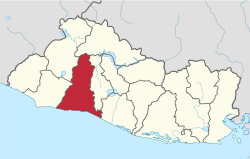
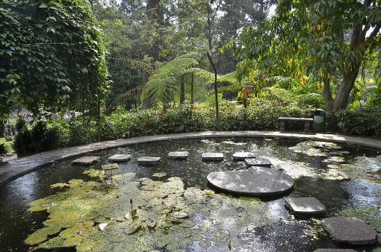
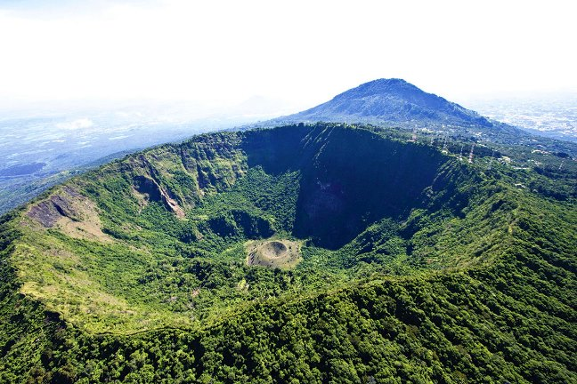

Datos históricos importantes
El 19 de julio de 1858, la localidad fue erigida como pueblo por Decreto Ejecutivo,
siendo aprobado por el congreso el 11 de febrero del siguiente año. Su erección como
municipio
se debió a la excesiva dependencia de Huizúcar, que se localizada a una distancia
considerable,
y a la cual se comunicaba por caminos en mal estado.
Lista de los municipios
- Santa Tecla
- Antiguo Cuscatlán
- Chiltiupán
- Ciudad Arce
- Colón
- Comasagua
- Huizúcar
- Jayaque
- Jicalapa
- Nuevo Cuscatlán
- Puerto de la Libertad
- Quezaltepeque
- Sacacoyo
- San José Villanueva
- San Juan Opico
- San Matías
- San Pablo Tacachico
- Talnique
- Tamanique
- Teotepeque
- Tepecoyo
- Zaragoza
Centros turísticos importantes
- San Andres
- Mandala eco villas
- Jardin Botánico de la laguna
- Puerto de La Libertad
- Joya de Ceren

Lagos
No contiene lagos
Ríos
- Cascada San Antonio
Volcanes o cerros
- Los cobanos
- El Boquerón

Personajes célebres
- Ricardo Villacorta
- Juan A. Dueñas
- Maximiliano Hernández Martínez
- Miguel Pinto